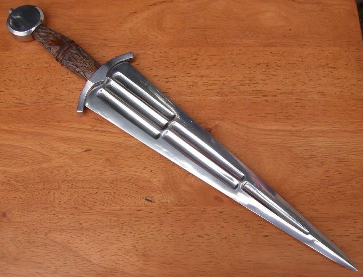

Чинкуэда

На рубеже XV-XVI веков на территории Италии стало популярным уникальное оружие, выделяющееся среди остальных клинков того времени — чинкуэда, которую историки причисляют к кинжалам, несмотря на наличие многих признаков полноценного меча. До 1450 года в Европе о подобном оружии, вероятно, не знали, поскольку неизвестно ни одного образца чинкуэды раннего времени. Все найденные экземпляры изготовлены в Италии и использовались, в основном, для самообороны жителями северных регионов. Городами, в которых чинкуэда появилась впервые — считаются Флоренция и Венеция, а основное место производства этих кинжалов — город Верона. Название «чинкуэда» кинжал получил благодаря итальянскому числу «5» — «cinque». Форма клинка кинжала была исключительно необычной для того времени — у самой рукояти ширина его достигала как раз пяти пальцев, сужаясь к острию в виде вытянутого треугольника. Второй вариант названия чинкуэды – кинжал «бычий язык», из-за схожести формы клинка, имеющего клиновидную форму, резко сужающегося к острию.
Главная страница.